Ce document fixe l'expression visuelle du Cabinet d'avocats D.G — logo, couleurs, typographie, composants, ton. Toute production future (site, papier, signature, support de plaidoirie) doit s'y référer pour préserver la cohérence du cabinet et le lien de confiance qu'il entretient avec ses clients.
Maître Doro Gueye
Avocat à la Cour, Case 491
Docteur en droit
133, Boulevard Déodat de Sévérac
31300 Toulouse
Mobile : 06 24 14 61 14
Cabinet : 09 88 04 54 99
Fondé en 2015 par Maître Doro Gueye, le Cabinet d'avocats D.G est installé au cœur de Toulouse. Il accueille particuliers, entreprises et associations dans un cadre soigné, sur rendez-vous.
Avocat à la Cour, docteur en droit, Maître Gueye a fait le choix d'une pratique pluridisciplinaire : six domaines couvrent les situations qu'une vie ou qu'un projet d'entreprise traverse — droit des étrangers, droit pénal, droit du travail, droit de la famille, droit des affaires et défense des victimes.
Quatre missions quotidiennes structurent l'activité : consultation juridique, rédaction d'actes et de requêtes, production de mémoires en défense, recherche documentaire et jurisprudentielle. Chaque dossier est traité personnellement par Maître Gueye, qui demeure l'interlocuteur unique du client.
Que l'on conteste une décision préfectorale, que l'on défende un licenciement, ou que l'on traverse une séparation, le droit français reste un labyrinthe pour celui qui n'en a pas la clé. Restaurer cette clé est notre raison d'exercer.
En offrant un cabinet à interlocuteur unique, où le même avocat suit le dossier du premier rendez-vous à la décision finale. En expliquant chaque étape dans un français accessible, sans renoncer à la précision juridique. En tenant nos délais : 48 h pour une première réponse, présence en urgence pour les gardes à vue et les rétentions.
Un cabinet d'avocats à Toulouse qui intervient en conseil et en défense sur six domaines du droit, traités personnellement par Maître Doro Gueye, avocat à la Cour, docteur en droit.
Trois familles d'expression cohabitent dans le système : Interlock (initiales entrelacées, signature classique), Pictogramme (figures stylisées sur leur socle, identité narrative) et Hybride (combinaison des deux). Chaque famille existe sur quatre fonds : Light (papier crème), Dark (encre), Burgundy (bordeaux), Transparent (sans cadre).
Pour usage courant (site, signature email, carte de visite recto), nous recommandons l'Interlock Light. Les autres déclinaisons couvrent les contextes spécifiques : fond sombre, support à dominante bordeaux, ou export PNG/SVG transparent.
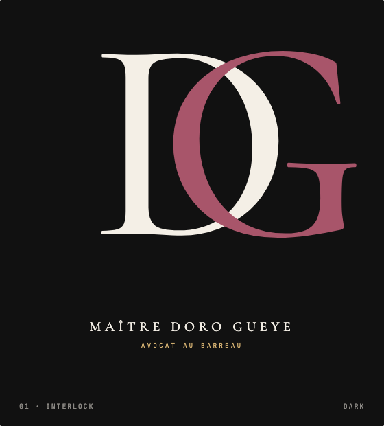
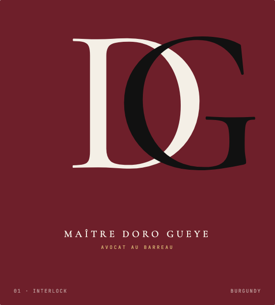
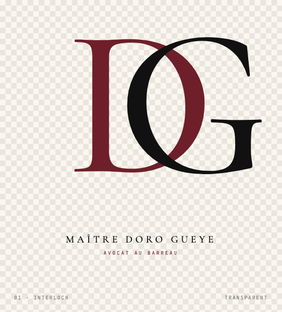
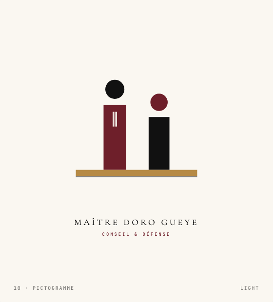
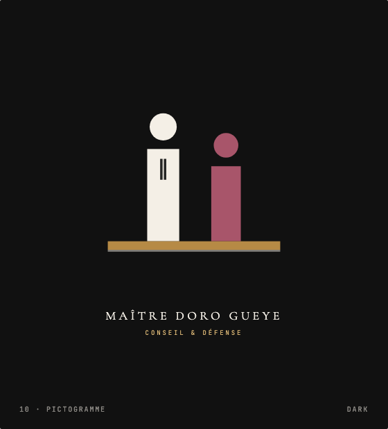
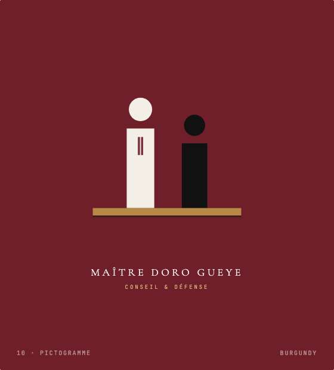
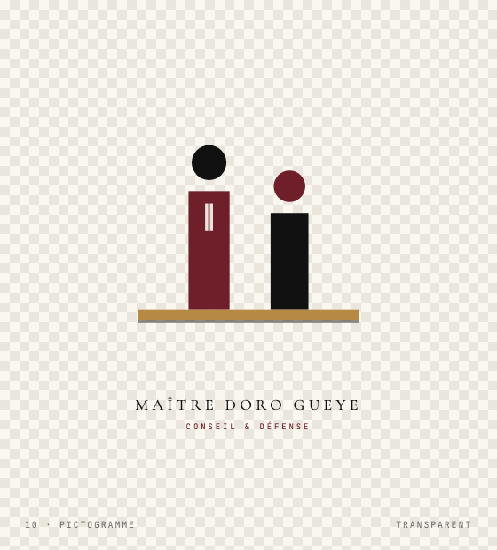
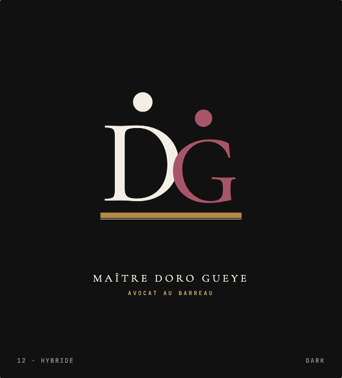
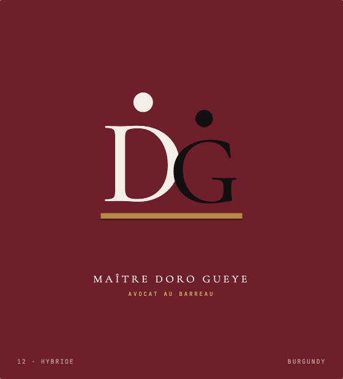
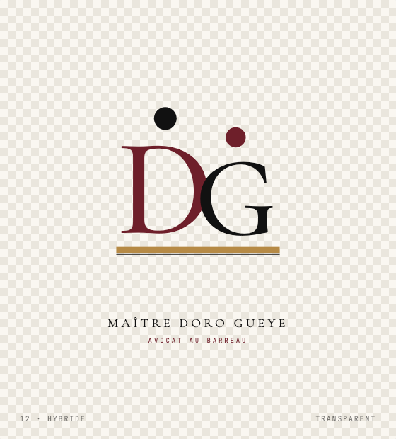
Interlock — la signature de référence. À utiliser sur le site, l'en-tête de papier, la signature email, le verso de carte de visite, et tous les contextes où le cabinet se présente sobrement.
Pictogramme — réservé aux supports éditoriaux et aux moments d'affirmation forte : page d'accueil "à propos" étendue, presse, contenu social, supports d'événement. Sa lecture est narrative : il raconte le cabinet plus qu'il ne le nomme.
Hybride — utiliser avec parcimonie. Pertinent en couverture de mémoire de défense, sur un document long où la double lecture (initiales + figure) renforce l'identification. À ne pas mélanger avec les deux autres sur un même support.
Fond Light par défaut ; Dark pour les supports sombres ; Burgundy quand le bordeaux est déjà la couleur dominante (carton d'invitation, dos de pochette) ; Transparent pour intégration sur photographie ou texture.
Une marge minimale équivalente à la hauteur de la majuscule D (notée x) doit être préservée autour du logo. Cette zone garantit la lisibilité et l'autorité visuelle du sigle dans tous les contextes — papier à entête, supports presse, signatures email.
marge = x sur les 4 côtésLe logo ne doit jamais descendre sous 24 px de hauteur d'œil en numérique (favicon excepté), ni sous 10 mm en impression. En dessous, la lisibilité du trait or se dégrade — préférer alors la variante monochrome noire.
Le bordeaux est emprunté à la robe d'audience et aux registres juridiques : une couleur d'autorité qui n'est ni le rouge brutaliste des médias, ni le rose corporate de la tech. Le choix d'un bordeaux profond plutôt qu'un cramoisi (e.g. #B22A2A) protège le cabinet contre une lecture "marketing".
L'or vient du palais de justice — dorures de balustrade, plaques émaillées, lettrines des codes Dalloz. Utilisé avec parcimonie (1 trait, quelques icônes), il fonctionne comme une signature plus que comme une couleur.
Le papier crème évite l'agressivité du blanc d'écran et invoque le grain du papier vergé. Cette chaleur chromatique met le client en confiance dès le premier regard.
Une Garamond seule eût été correcte mais datée : Cormorant Garamond conserve la silhouette du modèle tout en modernisant ses contre-formes et son x-height — la même lettre, mais lisible à 14 pixels sans loupe.
Inter est devenu, depuis 2020, la sans-serif neutre par défaut des produits sérieux (Figma, Stripe, GitHub). Elle disparaît, ce qui est exactement ce qu'on demande à une typo d'interface — laisser la Cormorant et le bordeaux parler.
Les deux polices sont libres (SIL Open Font License), hébergées par Google Fonts, et chargées via preconnect — performance et conformité RGPD préservées.
Justification — le corps de texte est justifié sur desktop pour évoquer la mise en page d'un mémoire de défense ; aligné à gauche sur mobile (largeur insuffisante).
Césure — hyphens: auto activée pour éviter les rivières de blanc.
Italique éditorial — réservé aux citations courtes (la devise du cabinet, les pull-quotes) et à un mot accentué de la Hero.
Pas de tirets cadratins — préférer la virgule, les deux-points, ou la parenthèse. Les em-dashes alourdissent inutilement le rythme.
Le container .wrap est plafonné à 1240 px pour préserver la longueur de ligne optimale (60–70 caractères). Sur les écrans larges, l'espace marginal blanc sert d'air respiratoire : il signale que le cabinet ne remplit pas pour remplir.
Le padding section vertical est de 96 px sur desktop, ramené à 64 px sous 940 px et à 48 px sous 560 px. Cette progression géométrique conserve le rythme malgré la contrainte mobile.
Une seule règle : 4 px par défaut sur les boutons, formulaires et cartes secondaires ; 6–8 px sur les cartes principales et modales ; 50 % sur les avatars et icônes circulaires. Aucun rayon supérieur à 8 px, aucune valeur intermédiaire — la discipline géométrique fait partie de l'identité visuelle.
Format technique : SVG inline, viewBox 0 0 24 24, stroke="currentColor", stroke-width 1.6 ou 1.8, stroke-linecap et stroke-linejoin "round". Toutes les icônes héritent de la couleur du contexte parent via currentColor.
Les photographies cultivent une lumière de bureau — lampes de cuivre, fenêtre latérale, ombres prononcées. Cette esthétique évoque les portraits de cour du XVIIe siècle (Rembrandt) sans verser dans le pastiche.
Trois sujets seulement : le portrait de Maître Gueye (en robe ou en costume), des gestes professionnels rapprochés (signature, poignée de main, prise de notes), et le décor de cabinet (bibliothèque, codes Dalloz, dossiers).
Aucune photographie de stock générique (équipe souriante, mains qui pointent un écran, etc.). Si une photo paraîtrait sur dix autres sites d'avocat, elle est interdite.
Trois variantes uniquement. Hauteur 46 px, rayon 4 px, font Inter 500 0.88rem, letter-spacing 0.02em.
Utilisée sur la page d'accueil et les pages domaine. Min-height 260 px, padding 32 / 28 px, bordure 1 px #E2DDD2, hover bordeaux + élévation subtile.
Régularisation administrative, contestation d'OQTF, refus de visa, nationalité, asile.
En savoir plus →Champ texte, select, textarea. Bordure 1 px #E2DDD2 sur fond papier ; focus → bordure bordeaux + fond blanc.
Basé sur l'élément <details> natif, sans JS. Pictogramme + qui pivote en × à l'ouverture.
Le premier rendez-vous est à 75 € TTC. Il permet d'évaluer la solidité du dossier et de proposer une convention d'honoraires adaptée pour la suite.
« Apporter une réelle valeur ajoutée à ses clients, en les accompagnant dans leurs projets, avec une dimension à la fois juridique et humaine. »
Cette phrase est l'unique citation utilisable en pull-quote sur le site, les supports presse, et les signatures. À reprendre intégralement (pas de paraphrase).
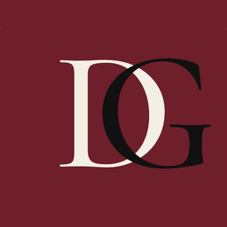
Cet email et toutes les pièces qui y sont jointes sont couverts par le secret professionnel. Si vous n'êtes pas le destinataire, merci de le détruire et d'avertir l'expéditeur.
En 2015, Maître Doro Gueye fonde son cabinet à Toulouse, après plusieurs années de pratique. Le choix d'un cabinet indépendant n'est pas une commodité administrative : c'est un engagement. Garantir au client que la personne qui le reçoit au premier rendez-vous sera la même qui plaidera son dossier. Pas de sous-traitance, pas d'interlocuteur changeant, pas de dossier confié à un stagiaire. Cette pratique du « bout en bout », rare dans une profession où la délégation est la norme, est devenue la signature du cabinet.
Faire du droit français — y compris dans ses matières les plus techniques — un terrain où le client comprend ce qu'il signe, sait pourquoi il agit, et peut anticiper ce qui suivra.
Accompagner chaque personne et chaque entreprise qui franchit la porte du cabinet, du premier rendez-vous à la décision finale, avec la clarté pédagogique d'un enseignant et la stratégie d'un avocat à la Cour.
Les valeurs ne sont pas des slogans — elles sont des rituels qu'on peut décrire.
Points forts (à conserver) : hiérarchie de l'information très lisible, présentation des sous-domaines détaillée, section avis clients structurée.
Points de différenciation à exploiter : visuel daté (esthétique web 2015) qu'on modernise ; spécialisation unique (droit du travail) là où D.G est pluridisciplinaire ; pas d'accent sur l'unicité de l'interlocuteur.
Aucune distinction d'origine, de nationalité, de sexe, d'orientation sexuelle, d'âge, de religion, de conviction politique, de situation économique, de handicap ou d'apparence physique.
Pour les personnes ne parlant pas français, le cabinet recourt à un interprète professionnel (français–anglais, français–arabe, français–wolof, autres langues sur demande). Frais précisés dans la convention d'honoraires.
Commanditaire — Cabinet d'avocats D.G, Maître Doro Gueye.
Conception — L'agence Nérée (Toulouse / Montauban) — direction artistique, identité visuelle, charte web.
Typographies — Cormorant Garamond (Christian Thalmann, SIL OFL) et Inter (Rasmus Andersson, SIL OFL).
Couleurs — palette dérivée des codes traditionnels du barreau français : bordeaux des robes d'audience, or des dorures de palais, papier des registres.
Photographies — sessions cabinet et portraits, propriété du Cabinet d'avocats D.G.